← Seriler
Kalabalık durunca hikâye başlar — kapalı çarşıda sohbet, yokuştan denize bakış, eski bir araba. Şehir, insanların temposunda yazılır.
14 kare
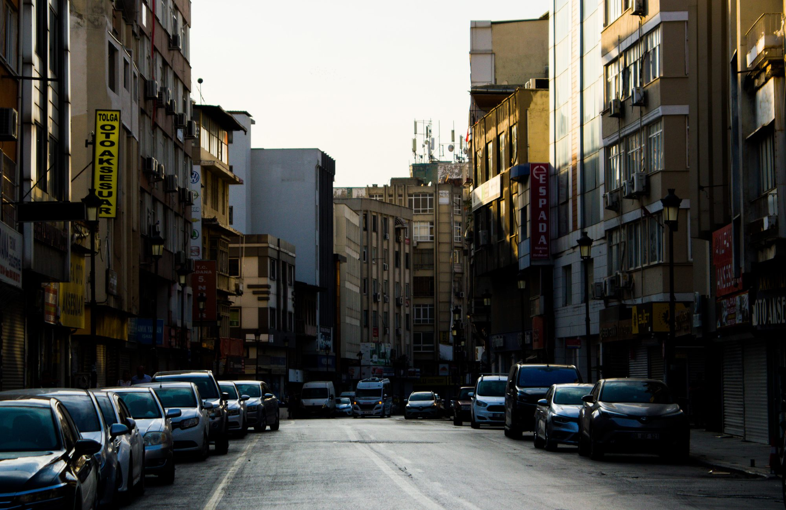
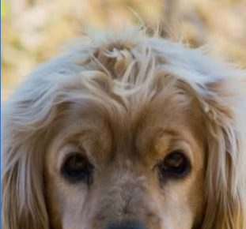
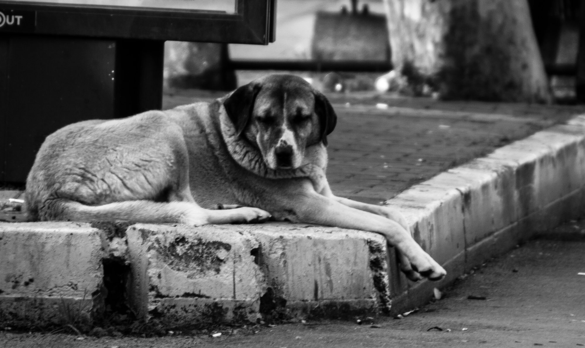
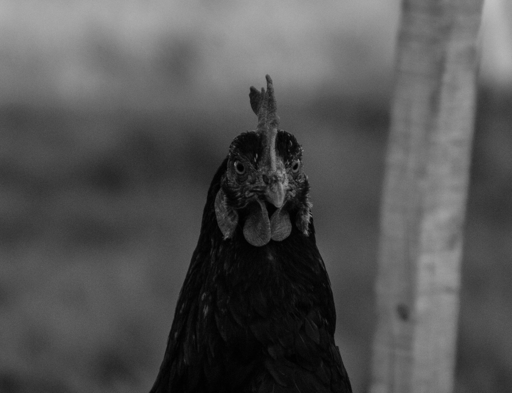
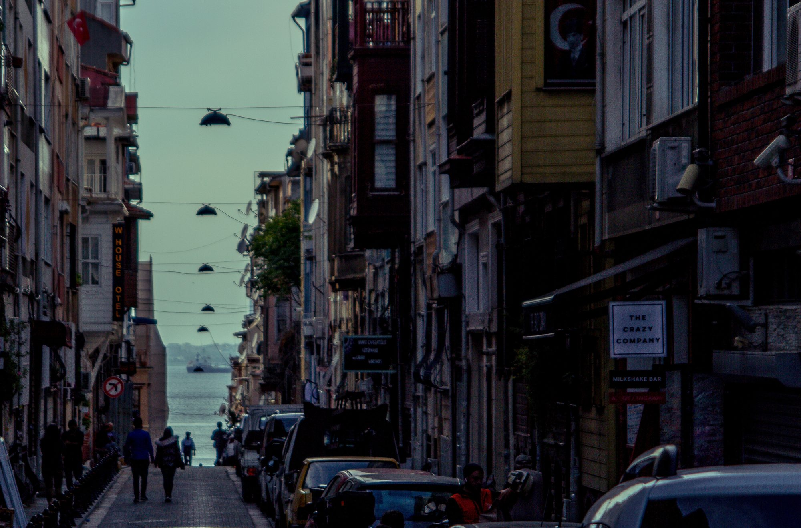
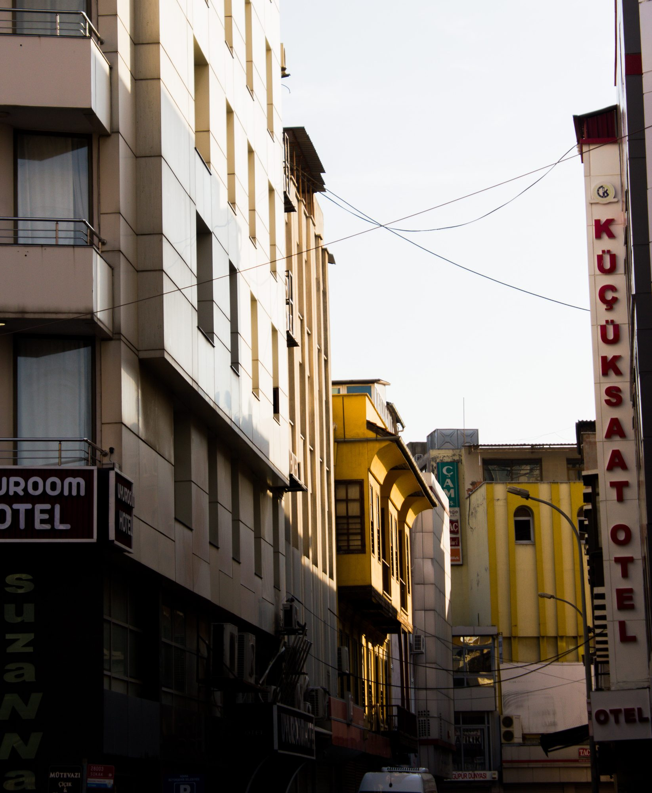
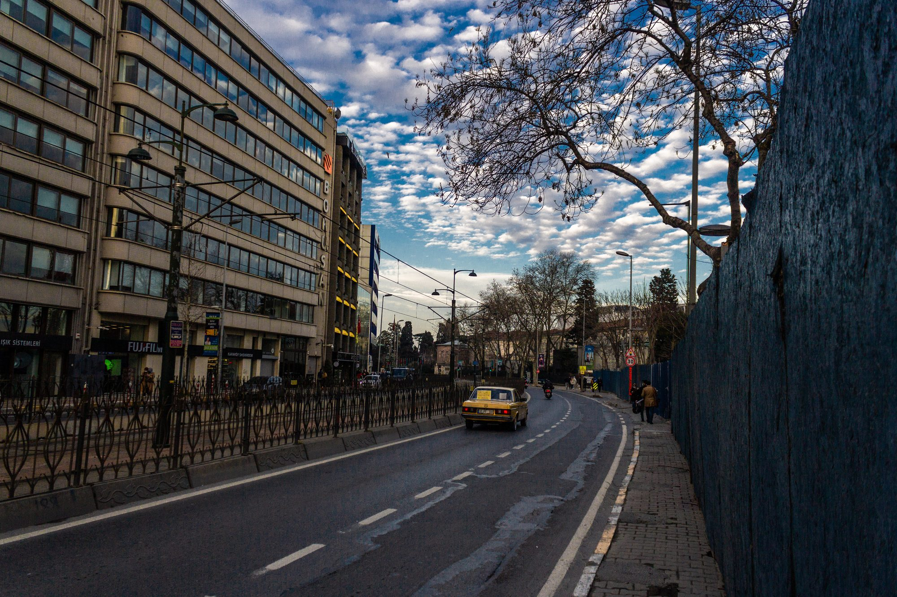
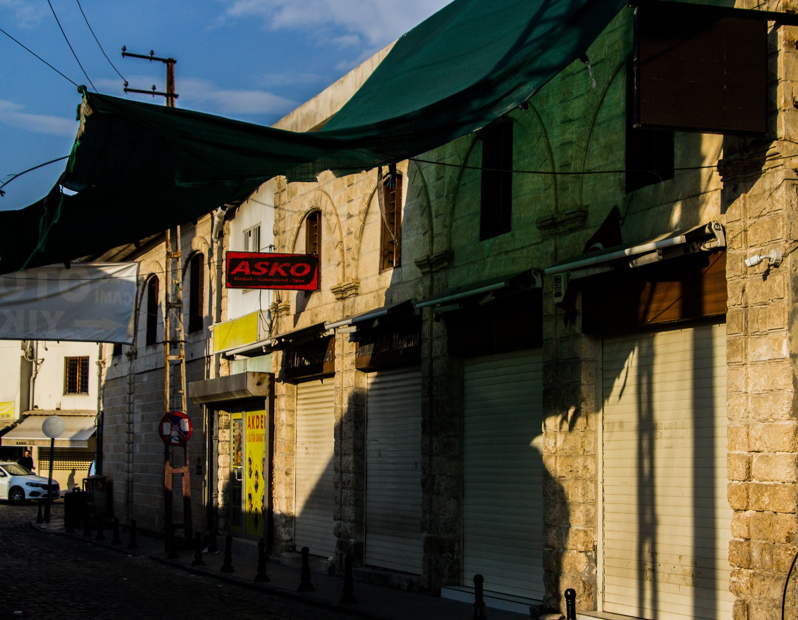
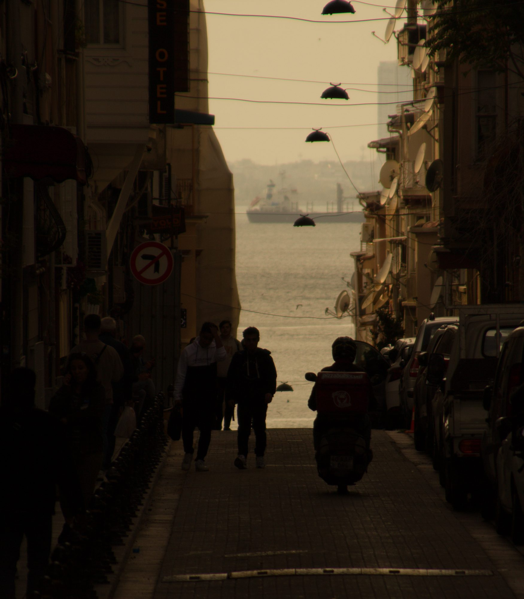
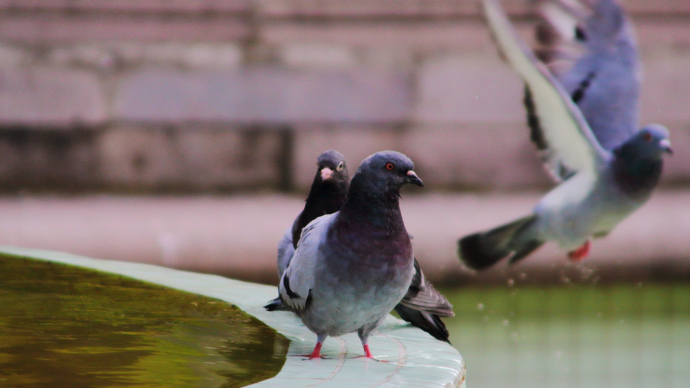
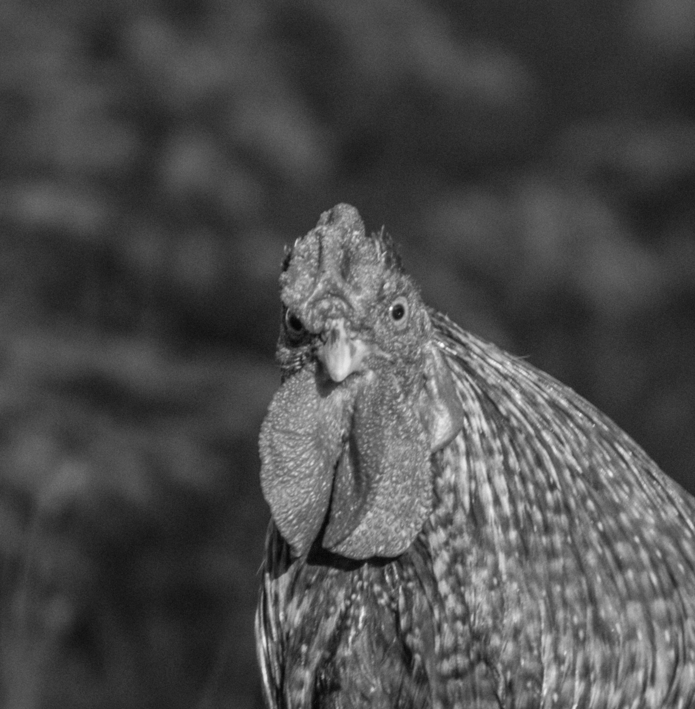
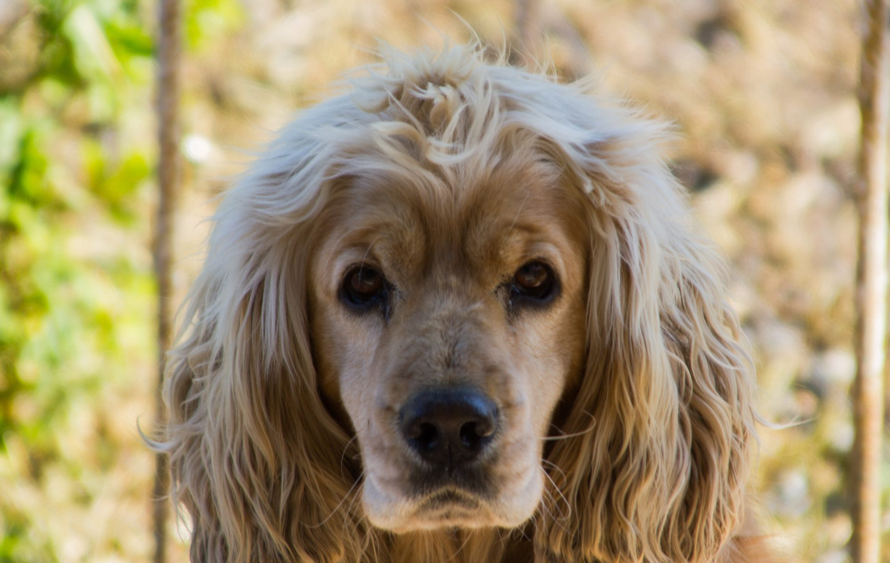
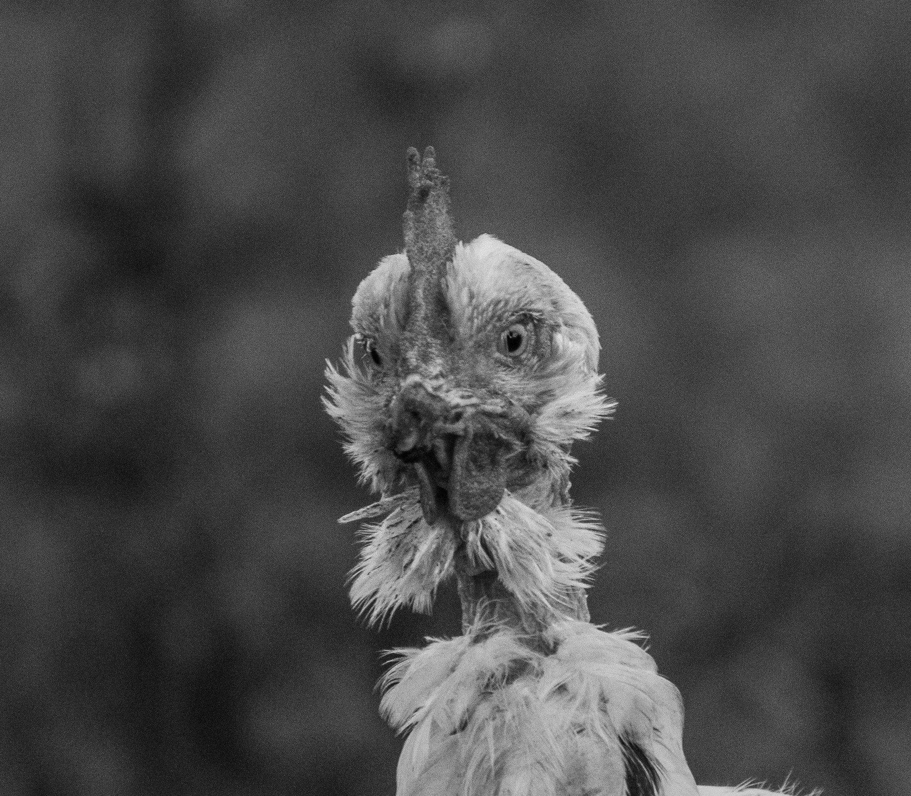
Diğer seriler
Deniz & Işık · Gece · Orman · Taş & Yapı